Visit the Australian
island and state of
Tasmania!

Tasmania may be small, but it offers an enormous variety of experiences. From hiking in wild landscapes to tasting world-class seafood and wine, exploring Indigenous heritage, or simply enjoying the relaxed lifestyle, Tasmania is a destination worth discovering. Whether you are an adventure seeker, a history lover, or a foodie, this island state has something unique to offer.
About Tasmania
Tasmania, often called “Tassie,” is Australia’s only island state. Located south of the mainland, across the Bass Strait, it is famous for its unspoiled wilderness, diverse wildlife, and rich cultural history. With a population of about half a million people, Tasmania combines modern Australian life with unique traditions, offering visitors a chance to explore natural beauty, taste high-quality local food, and experience a slower, friendlier lifestyle.
State Symbols
- State Flower: The Tasmanian Blue Gum (Eucalyptus globulus), a tree with aromatic leaves that has become a symbol of the island’s forests.
- State Animal: The Tasmanian Devil, a small but powerful marsupial that lives only in Tasmania. Known for its loud screeches and strong jaws, it has become an icon of Tasmanian wildlife.
- State Bird: The Yellow Wattlebird, the largest honeyeater in the world, found mainly in Tasmania.
- State Motto: “Ubertas et Fidelitas” meaning “Fertility and Faithfulness.”
Native Wildlife
Tasmania is world-renowned for its unique wildlife. Besides the famous Tasmanian Devil, you can find wombats, echidnas, wallabies, and quolls in their natural habitats. The island is also a birdwatcher’s paradise, with more than twelve species found nowhere else in the world. The cool waters around Tasmania are home to seals, penguins and even migrating whales.
Political System
Tasmania is part of the Commonwealth of Australia and has its own state parliament. The political system is democratic, with a Governor representing the British monarch and a Premier leading the state government. Tasmania has five regions, each with its own local councils that help manage community services.
History and Indigenous Culture
Tasmania has a long history. The island was originally inhabited by the Palawa people, the Aboriginal population who lived there for more than 40,000 years before European settlement. Tragically, colonization in the 19th century led to violent conflict and the loss of much of the Indigenous population. Today, Tasmania works to recognize and celebrate Aboriginal culture through festivals, art, and education. Visitors can learn about the Palawa people at museums such as the Tasmanian Museum and Art Gallery in Hobart.
Historical Sites and Events
- Port Arthur Historic Site: A former convict settlement and UNESCO World Heritage Site. Open daily (9:00-17:00), tickets from $47 for adults. Guided tours and ghost tours are available.
- Richmond Village: A charming historic town with one of Australia’s oldest bridges (built in 1825) and colonial-era architecture. Entry is free and open all year round.
- Cascades Female Factory: A heritage site in Hobart where female convicts once lived. Open 9:00-17:00, adult tickets $25.
Tourist Attractions
- Cradle Mountain-Lake St Clair National Park: Famous for alpine scenery, hiking trails like the Overland Track, and diverse wildlife. Park passes start at $20.
- Wineglass Bay (Freycinet National Park): A world-famous beach with crystal-clear waters, hiking trails, and lookout points.
- MONA (Museum of Old and New Art): A modern art museum in Hobart, often described as quirky and controversial. Open Friday to Monday, entry is $35 for adults.
- Bruny Island: A short ferry ride from Hobart, Bruny Island offers stunning coastlines, local produce, and the chance to spot rare white wallabies.
Dining in Tasmania
- Mures Upper Deck (Hobart): Specializes in seafood straight from Tasmanian waters. Open daily 11:30-21:00. Expect to pay around AUD $35 and $50 for a main course.
- Stillwater (Launceston): A fine-dining restaurant located in a historic flour mill by the Tamar River. Open Tuesday-Saturday, 8:00-22:00. Meals cost around $40 and $60.
- Jackman & McRoss (Battery Point, Hobart): A bakery café offering gourmet pies, pastries, and sandwiches. Open daily 7:00-16:00, with meals between $10 and $20.
Fun Facts about Tasmania
- Over 40% of Tasmania is protected as national parks and reserves.
- It is home to some of the cleanest air in the world, thanks to its location in the Southern Ocean.
- Tasmania produces award-winning wines, especially Pinot Noir and sparkling varieties.
- The island has four distinct seasons, unlike much of mainland Australia.
- The Tasmanian Devil, despite its fierce name, is about the size of a small dog.